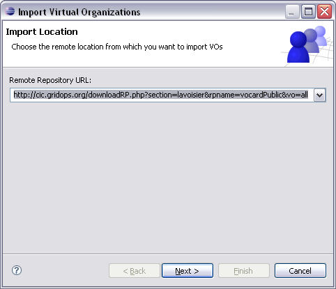
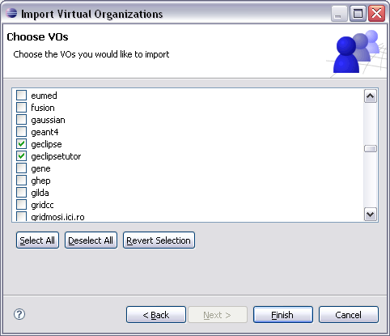

Declaring a VO by hand is sometimes not very easy since the necessary
parameters are most often not easily accessible especially for new
users. Therefore g-Eclipse provides mechanism for importing VOs from
a repository. If such a functionality is available stringly depends on
the middleware. Currently g-Eclipse does only provide an importer for
VOMS VOs.
To import a VO go to the
 g-Eclipse > VO-Declarations preference page and click
Import... to start the VO Import Wizard. If there are more
than one VO importer installed a first wizard page will give you the chance
to select the used importer. If there is only the VOMS VO importer installed
the wizard will directly switch to the second page that let you specify
a repository location from which to import VO settings. Most likely this
location will be preselected by the importer by may be changed to another
location:
g-Eclipse > VO-Declarations preference page and click
Import... to start the VO Import Wizard. If there are more
than one VO importer installed a first wizard page will give you the chance
to select the used importer. If there is only the VOMS VO importer installed
the wizard will directly switch to the second page that let you specify
a repository location from which to import VO settings. Most likely this
location will be preselected by the importer by may be changed to another
location:

After specifying the repository location and clicking Next the wizard
will query the specified location for available VOs. If this query is successful
the next wizard page will show a list of VOs that are available for import:

Within this page you have the possibility to select the VOs you would like
to import. After doing so and after clicking Finish the selected VOs
will be imported and will be afterwards available in the VO preference page.
IMPORTANT!!!
Importing VOs may fail or may result in wrong VO values. This is not a problem
with g-Eclipse but with the information provided from the repositories. Most
often it is the VO administrators responsibility to maintain the information
contained in these repositories. So if you find that the information for your
VO is invalid please contact your VO administrator and ask him to correct the
information in the corresponding repository. In any case you should carefully
check the information of your newly imported VOs.